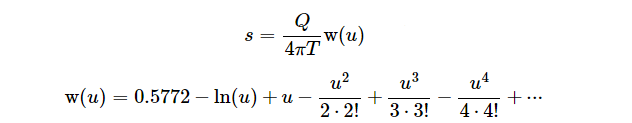

The Theis solution is based on the following assumptions:
- The flow in the aquifer is adequately described by Darcy's law (i.e. Re<10).
- homogeneous, isotropic, confined aquifer,
- well is fully penetrating (open to the entire thickness (b) of aquifer),
- the well has zero radius (it is approximated as a vertical line) — therefore no water can be stored in the well,
- the well has a constant pumping rate Q,
- the head loss over the well screen is negligible,
- aquifer is infinite in radial extent,
- horizontal (not sloping), flat, impermeable (non-leaky) top and bottom boundaries of aquifer,
- groundwater flow is horizontal
- no other wells or long term changes in regional water levels (all changes in potentiometric surface are the result of the pumping well alone)

where W() is the well-khown well function, Q is the discharge (pumping) rate of the well, T and S are transmissivity and storativity of aquifer, r is the distance level between well and observation point and t is the time since pumping start.
References
Theis, C.V., 1935. The relation between the lowering of the piezometric surface and the rate and duration of discharge of a well using groundwater storage, Am. Geophys. Union Trans., vol. 16, pp. 519-524.
Wikipedia, Aquifer test, 2015. [online]. http://en.wikipedia.org/wiki/Aquifer_test
AQTESOLV, Theis Solution for Nonleaky Confined Aquifers, 2015. [online]. http://www.aqtesolv.com/theis.htm